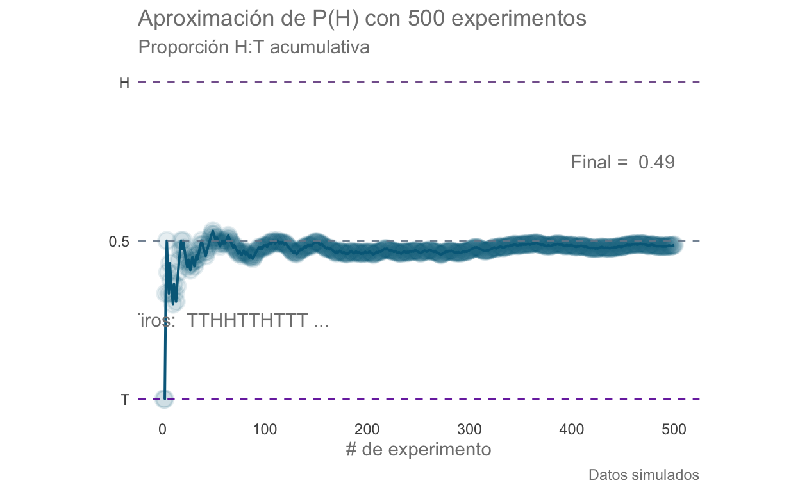
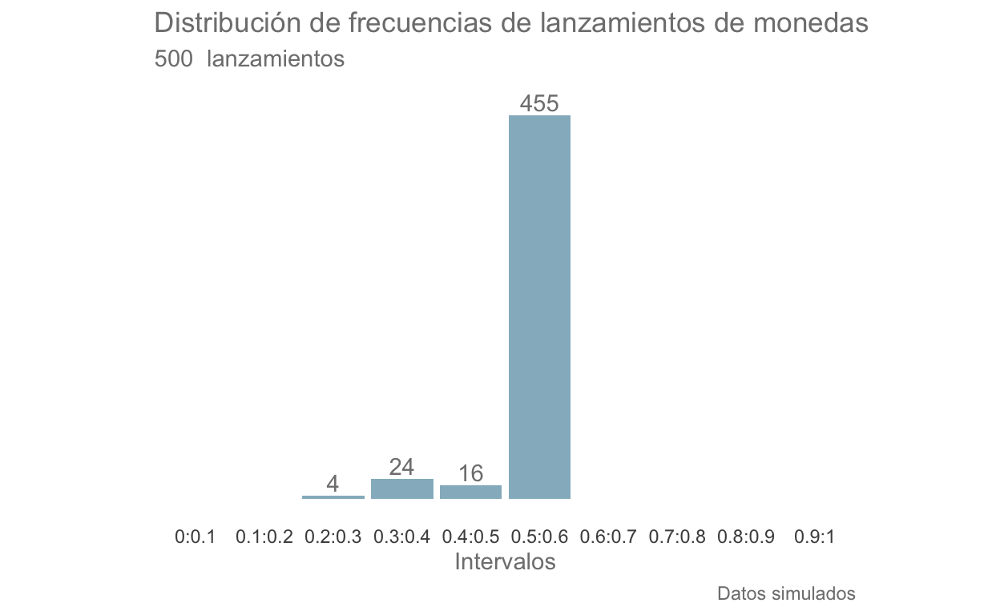
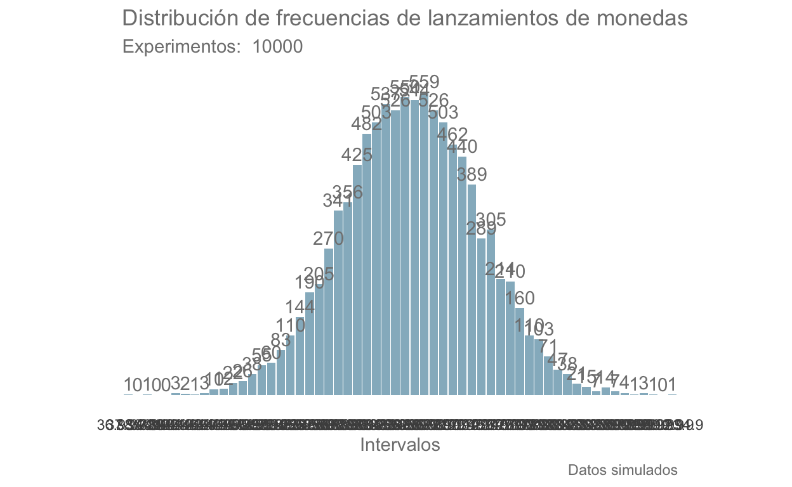
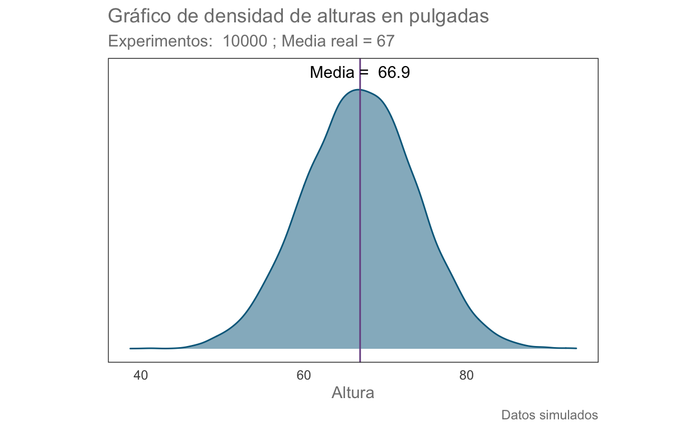

Frecuencia a largo plazo
Supongamos que queremos conocer la frecuencia relativa a largo plazo de obtener “cara” (H) al lanzar una moneda. La intuición nos dice que deberá de ser 0.5, pero pretendamos que no es tan obvio. Todo lo que sabemos es que existe algún proceso subyacente que genera “H” o “T” (cruz) cuando obtememos una muestra. Este proceso tiene un parámetro \(\theta\), cuyo valor es \(\theta = 0.5\). Si es todo lo que conocemos, podemos aproximar la probabilidad de H realizando el experimento N veces. Para ello primero realicemos 500 experimentos y calculemos la proporción acumulada hasta el i-esimo experimento:
volado <- function(N){
# N es el número de lanzamientos o experimentos que realizaremos
# Después realizaremos los muestreos:
sec <- sample(x = c(0, 1),
prob = c(.5 ,.5),
size = N,
replace = TRUE)
# Calculamos la suma acumulativa.
# Si solo obtenemos 1s el resultado final será 500,
# si solo obtenemos 0s el resultado final será 0.
r <- cumsum(sec)
# Generamos un identificador para cada muestreo
n <- 1:N
# Calculamos la proporción H:T acumulada a cada muestreo
prop.acum <- r/n
# Generamos el data.frame con los resultados
resultados <- data.frame(n, prop.acum)
return(list(N, sec, prop.acum, resultados))
}
res.list <- volado(N = 500)
N <- res.list[[1]]
sec <- res.list[[2]]
prop.acum <- res.list[[3]]
resultados <- res.list[[4]]
Podríamos ver los resultados numéricamente; sin embargo, una mejor aproximación para comprender el cambio en las proporciones es utilizar un gráfico de líneas:
library(ggplot2)
prop.plot <- ggplot(data = resultados, aes(x = n, y = prop.acum)) +
geom_line(colour = "deepskyblue4",
linetype = "solid", size = 0.7) +
geom_point(colour = "deepskyblue4", alpha = 0.1, fill = NA,
shape = "circle", stroke = 1, size = 4) +
labs(x = "# de experimento",
y = element_blank(),
title = "Aproximación de P(H) con 500 experimentos",
subtitle = "Proporción H:T acumulativa",
caption = "Datos simulados") +
theme(panel.grid.minor = element_blank(),
panel.grid.major = element_blank(),
panel.background = element_blank(),
axis.line = element_blank(),
aspect.ratio = 1/1.61,
axis.ticks = element_blank(),
text = element_text(colour = "gray50")
) +
scale_y_continuous(breaks = c(0.0,0.5,1),
labels = c("T", "0.5", "H")) +
scale_x_continuous(n.breaks = 5) +
geom_hline(yintercept = 1,
colour = rgb(118,78,144, maxColorValue = 255),
alpha = 0.9, linetype = "dashed") +
geom_hline(yintercept = 0.5, colour = "lightslategray",
alpha = 0.9, linetype = "dashed") +
geom_hline(yintercept = 0,
colour = rgb(106,16,166, maxColorValue = 255),
alpha = 0.9, linetype = "dashed") +
annotate("text", x = 450, y = 0.75,
label = paste("Final = ", round(prop.acum[N],2)),
colour = "gray50") +
annotate("text", x = 65, y = 0.25,
label = paste("Tiros: ",
paste(c("T","H")[sec[1:10]+1],
collapse = ""), "..."),
colour = "gray50")
prop.plot

Distribución de probabilidades
Veamos ahora la distribución de probabilidades de la proporción H:T o, en otras palabras, la distribución de probabilidades de la probabilidad de que obtengamos H. Para hacer esto debemos de tener algunas consideraciones, la principal es que la información “cruda” no nos funciona para este propósito, tenemos que procesarla y ponerla en términos de frecuencias:
# Primero generamos los intervalos que nos interesan:
amplitud <- 0.1
intervaln <- seq(0, 1, amplitud) # Una secuencia de 0 a 1, cada "amplitud"
# Ahora calculamos las frecuencias para cada intervalo:
freq.table <- transform(table(cut(resultados$prop.acum, intervaln)))
# Cambiemos el nombre de las columnas
colnames(freq.table) <- c("Intervalo", "Frecuencia")
# Generamos una nueva columna que contenga únicamente los límites utilizando la función sapply,
# Creamos primero una función personalizada:
intervals <- function(x){
# En caso de que no esté instalada la librería stringr, R la instalará
if(!require("stringr")) install.packages("stringr", dependencies = T)
# Si el número de caracteres es mayor a 7:
ifelse(nchar(as.character(x))>7,
# Extrae los caracteres 2:8 y reemplaza las "," con ":"
str_replace(substr(x, 2, 8), ",", ":"),
# Si no, extrae solamente los caracteres 2:8 y reemplaza las "," con ":"
str_replace(substr(x, 2, 6), ",", ":"))
}
# Aplicamos la función personalizada y generamos una columna nueva:
freq.table["Lims"] <- sapply(freq.table$Intervalo, intervals)
# Transformamos los 0s en NAs para que no sean considerados al graficar
freq.table$Frecuencia[freq.table$Frecuencia == 0] <- NA
freq.table
Intervalo Frecuencia Lims
1 (0,0.1] NA 0:0.1
2 (0.1,0.2] NA 0.1:0.2
3 (0.2,0.3] NA 0.2:0.3
4 (0.3,0.4] 2 0.3:0.4
5 (0.4,0.5] 4 0.4:0.5
6 (0.5,0.6] 475 0.5:0.6
7 (0.6,0.7] 18 0.6:0.7
8 (0.7,0.8] NA 0.7:0.8
9 (0.8,0.9] NA 0.8:0.9
10 (0.9,1] 1 0.9:1Ahora que tenemos el resultado en un data.frame, podemos graficarlo (NOTA: Las advertencias no son errores, son solo por los NAs que incluimos anteriormente):
freq.plot <- ggplot(data = freq.table, aes(x = Lims, y = Frecuencia)) +
geom_bar(stat = "identity", colour = NA,
fill = "deepskyblue4", alpha = 0.5) +
geom_text(aes(label = Frecuencia),
stat = "identity",
nudge_y = 15, colour = "gray50") +
labs(x = "Intervalos",
y = element_blank(),
title =
"Distribución de frecuencias de lanzamientos de monedas",
subtitle = paste(N, " lanzamientos"),
caption = "Datos simulados") +
theme(panel.grid.minor = element_blank(),
panel.grid.major = element_blank(),
panel.background = element_blank(),
axis.line = element_blank(),
aspect.ratio = 1/1.61,
axis.ticks = element_blank(),
text = element_text(colour = "gray50")
) +
scale_y_continuous(breaks = NULL)
freq.plot

Ahora que tenemos clara la definición de probabilidad, y tomando en consideración el gráfico anterior, pasaremos a hablar de Distribuciones de probabilidad.
Para hacer más eficiente el trabajo en clase, en la siguiente celda únicamente estoy “envolviendo” el código de las celdas anteriores en funciones:
# Función para el cálculo de las distribuciones de frecuencias
tabla.frec <- function(df, var.col, inter = 0.1, min = 0, max = 1, ...){
# df es el data.frame que contiene los resultados de nuestros experimentos
# var.col es una cadena de caracter que contiene el nombre de la columna con la variable de interés
# inter indica la amplitud de los intervalos, por defecto = 0.1
# min indica el valor mínimo de nuestra variable
# max indica el valor máximo de nuestra variable
# Primero generamos los intervalos que nos interesan:
# Una secuencia de 0 a 1, cada "inter"
intervaln <- seq(min-inter, max+inter, inter)
# Ahora calculamos las frecuencias para cada intervalo:
# Nota: Se puede realizar con la función hist;
# fue decisión personal hacerlo de este modo
freq.table <- transform(table(cut(as.matrix(df[var.col]), intervaln)))
# Cambiemos el nombre de las columnas
colnames(freq.table) <- c("Intervalo", "Frecuencia")
# Generamos una nueva columna que contenga únicamente
# los límites utilizando la función sapply,
# Creamos primero una función personalizada:
intervals <- function(x){
# En caso de que no esté instalada la librería stringr, R la instalará
if(!require("stringr")) install.packages("stringr", dependencies = T)
str_replace(str_extract(x,"(?<=\\().+?(?=\\])"), ",", ":")
}
# Aplicamos la función personalizada y generamos una columna nueva:
freq.table["Lims"] <- sapply(freq.table$Intervalo, intervals)
# Transformamos los 0s en NAs para que no sean considerados al graficar
#freq.table$Frecuencia[freq.table$Frecuencia == 0] <- NA
return(freq.table)
}
frec.graf <- function(df, lims.col = 3, freq.col = 2){
# df es el data.frame con nuestra tabla de frecuencias
# lims.col es el número de la columna que contiene los intervalos
# (valores de x)
# freq.col es el número de la columna que contiene el número de frecuencias
N = sum(df[,freq.col])
freq.plot <- ggplot(data = df, aes(x = df[,lims.col], y = df[,freq.col])) +
geom_bar(stat = "identity",
colour = NA, fill = "deepskyblue4", alpha = 0.5) +
geom_text(aes(label = df[,freq.col]),
stat = "identity",
nudge_y = 20, colour = "gray50") +
labs(x = "Intervalos",
y = element_blank(),
title =
"Distribución de frecuencias de lanzamientos de monedas",
subtitle = paste("Experimentos: ",N),
caption = "Datos simulados") +
theme(panel.grid.minor = element_blank(),
panel.grid.major = element_blank(),
panel.background = element_blank(),
axis.line = element_blank(),
aspect.ratio = 1/1.61,
axis.ticks = element_blank(),
text = element_text(colour = "gray50")
) +
scale_y_continuous(breaks = NULL)
return(freq.plot)
}
Analicemos la distribución de una variable continua distribuída normalmente, primero cada 5 unidades:
norm.var <- data.frame(var = rnorm(10000, mean = 67, sd = 7))
norm.res.5 <- tabla.frec(norm.var,
var.col = "var",
inter = 5,
min = min(norm.var),
max = max(norm.var))
frec.graf(norm.res.5)

Ahora veámosla con una amplitud de 1:
norm.res.1 <- tabla.frec(norm.var, var.col = "var", inter = 1,
min = min(norm.var), max = max(norm.var))
frec.graf(norm.res.1)

En este punto, incluso desde la gráfica anterior, el gráfico se comenzó a cargar de demasiada información. Esto era de esperarse, tomando en cuenta que en cada ocasión achicamos los intervalos. Para hacerlos infinitesimalmente pequeños podemos utilizar un tipo de gráfico que se conoce como KDE, basado en la técnica “Kernel Density Estimation” que, en pocas palabras, nos permite mostrar la función de densidad de un conjunto de datos:
prom.norm.var <- mean(norm.var$var)
de.plot <- ggplot(data = norm.var, aes(var)) +
geom_density(kernel = "gaussian",
colour = "deepskyblue4", fill = "deepskyblue4",
alpha = 0.5) +
labs(x = "Altura",
y = element_blank(),
title = "Gráfico de densidad de alturas en pulgadas",
subtitle = paste("Experimentos: ",
length(norm.var$var),
"; Media real = 67"),
caption = "Datos simulados") +
theme(panel.grid.minor = element_blank(),
panel.grid.major = element_blank(),
panel.background = element_blank(),
axis.line = element_blank(),
aspect.ratio = 1/1.61,
axis.ticks = element_blank(),
text = element_text(colour = "gray50")
) +
scale_y_continuous(breaks = NULL) +
geom_vline(xintercept = prom.norm.var,
colour = rgb(118,78,144, maxColorValue = 255)) +
annotate("text", x = prom.norm.var, y = 0.06,
label = paste("Media = ", round(prom.norm.var, 1)))
de.plot

Podemos ver también la importancia de la representatividad con una animación. Primero generemos un data.frame que contenga todos los estados que nos interesan, en este caso desde 10 muestras hasta 1010, en incrementos de 10 muestras:
for (i in seq(10,1010,10)) {
ifelse(i == 10,
norm.var2 <- data.frame(var = norm.var$var[1:i],
iter = i,
promedio = mean(norm.var$var[1:i])),
norm.var2 <- rbind(norm.var2,
data.frame(var = norm.var$var[1:i],
iter = i,
promedio = mean(norm.var$var[1:i])
)
)
)
}
Ahora utilicemos la librería gganimate para generar la
animación de nuestro interés. OJO: Esta animación no se mostrará en la
libreta, sino en el visor de RStudio OJO 2: Dependiendo de la
complejidad de la animación, el proceso de renderizado puede tomar desde
unos cuantos segundos hasta varios minutos o, incluso, más de una hora.
Este ejemplo es el segundo caso. NO correr al menos de que tengas
bastante tiempo disponible o una computadora con bastante fuerza bruta
en mononúcleo.
# library(gganimate)
# de.plot <- ggplot(data = norm.var2, aes(var)) +
# geom_density(kernel = "gaussian",
# colour = "deepskyblue4", fill = "deepskyblue4", alpha = 0.5) +
# labs(x = "Altura",
# y = element_blank(),
# title = "Gráfico de densidad de alturas (pulgadas)",
# subtitle = paste("Experimentos: ",length(norm.var$var),
# "; Media real = 67"),
# caption = "Datos simulados") +
# theme(panel.grid.minor = element_blank(),
# panel.grid.major = element_blank(),
# panel.background = element_blank(),
# axis.line = element_blank(),
# aspect.ratio = 1/1.61,
# axis.ticks = element_blank(),
# text = element_text(colour = "gray50")
# ) +
# scale_y_continuous(breaks = NULL) +
# geom_vline(xintercept = norm.var2$promedio,
# colour = rgb(118,78,144, maxColorValue = 255)) +
# annotate("text", x = norm.var2$promedio, y = 0.06,
# label = paste("Media = ", round(norm.var2$promedio, 2))) +
# transition_states(iter) +
# labs(subtitle =
# paste("Experimentos: {closest_state}; Media real = 67"))
# de.plot
Intervalos de confianza
Existen distintas formas de calcular los intervalos de confianza para
una media en R. Uno de ellos es utilizando la función
t.test, el cual utiliza la distribución T-Student para el
cálculo. De su salida vemos que nos da el valor del estadístico de
prueba (valor crítico), los grados de libertad y un valor de p. Estos
elementos los ignoraremos por el momento. Lo que sí nos interesa es la
información que aparece por debajo; es decir, los límites de los
intervalos de confianza y el valor de la media.
t.test(norm.var$var, conf.level = 0.95)
One Sample t-test
data: norm.var$var
t = 963.15, df = 9999, p-value < 2.2e-16
alternative hypothesis: true mean is not equal to 0
95 percent confidence interval:
66.76802 67.04035
sample estimates:
mean of x
66.90419 Otra forma de calcularlos es utilizando la librería
Rmisc:
#install.packages("Rmisc", dependencies = T)
library(Rmisc)
Una vez instalada y cargada, podemos utilizar la función CI(x,
ci = a), donde x es el vector que contiene los datos
y a representa el nivel de “confianza” de la estimación.
Utilicemos los mismos datos de altura que generamos hace unos
momentos:
CI(norm.var$var, ci = 0.95)
upper mean lower
67.04035 66.90419 66.76802 Como vemos, la función calcula los intervalos de confianza utilizando la distribución T. Esto se debe a que es el modo más común de realizar la estimación de intervalos para variables continuas. ¿La razón? Eso es tema para una clase posterior, en la que explicaré las características que hacen que la distribución T sea uno de los principales “caballitos de batalla” en la estadística.
Una última opción es utilizar la librería Rcompanion, la
cual tiene un método de la estimación de intervalos basado en
“remuestreos” Bootstrap. Al igual que en el resto de librerías, habrá
que instalarla:
#install.packages("Rcompanion", dependencies = T)
library(rcompanion)
Una de las funciones que podemos utilizar es
groupwiseMean(formula, data, conf, R), donde
formula indica al mismo tiempo las columnas de la variable
continua y la variable de agrupamiento, tal que: var ~
grupo; data indica el data.frame que
contiene la información, conf que indica la amplitud de los
intervalos y finalmente R que indica el número de replicas
bootstrap a realizar. Partiendo de lo anterior:
groupwiseMean(var~1, data = norm.var, conf = 0.95, R = 500)
.id n Mean Conf.level Trad.lower Trad.upper
1 <NA> 10000 66.9 0.95 66.8 67Vemos que la salida es un poco más compleja; sin embargo, lo más relevante es que los intervalos son sumamente cercanos a los que calculamos anteriormente. ¿Esto quiere decir que no tiene caso realizar las réplicas bootstrap? No, simplemente que sus beneficios los veremos aplicándolas a la situación para la que fueron pensadas; es decir, distribuciones sesgadas y no normales a diferencia de la variable que analizamos aquí.
Recursos recomendados para esta sección: Rcompanion y Handbook of Biological Statistics
Ejercicio
Para la tarea de esta semana cargarás el archivo
Datos1.csv con el código aquí incluído y, de manera similar
a como se vio durante la clase, realizarás la estimación de la media, la
desviación estándar y los intervalos de confianza (utilizando cualquiera
de las formas aquí vistas) para diferentes tamaños de muestra (ojo a la
función sample()). El objetivo es ver cómo cambian tanto la
estimación puntual como la amplitud de los intervalos al incrementar el
tamaño de muestra.
Parte OPCIONAL:Si quieres desafiarte un poco más, considera alguna de las variables Dieta o Periodo como un grupos dentro de la población y realiza las estimaciones con esa consideración. Puedes también intentar presentar los resultados de manera gráfica (agrupados o no). Una alternativa es usar un gráfico KDE y mostrar los límites como líneas verticales, otra alternativa es un gráfico similar al que se presentó en clase, con el número de muestras en el eje x y un gráfico con líneas de error para el eje y. Este apartado OPCIONAL no tiene una “respuesta correcta”, así que puedes experimentar y presentar (o no) los resultados de la manera en que tú consideres se resuelven los objetivos.
df <- read.table(file.choose(), header = F, skip = 1, sep = ",")
colnames(df) <- c("Dieta", "Periodo", "Rep", "LT", "PT", "id")
head(df)